Using the Visualiser
Overview
The Visualiser is an extensible plugin that can be used to visualize anything that can be
represented by bars and stripes. It began as the Aspect Visualiser, which was a part of the popular AJDT
plugin where it was created to visualize how aspects were affecting classes in a project,
but has since been extracted to become its own component.
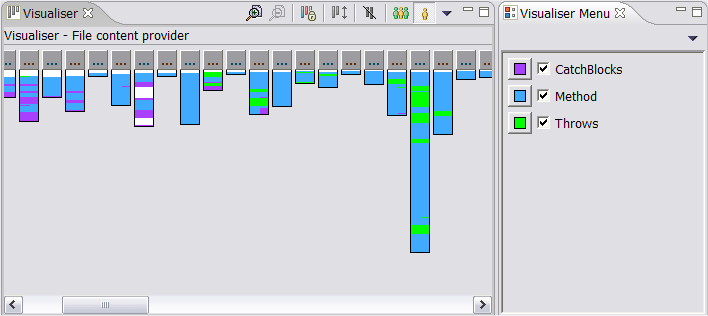
The Visualiser plugin has two views - the main Visualiser view, which displays
the bar drawing, and the Visualiser Menu, which displays the 'kinds' of stripes that
appear on the bars. The Menu is used to activate and deactivate kinds, and to change
the colours used. Bars in the Visualiser are given a white background if they have ny stripes attached to them,
otherwise they are dark grey.
Visualization Modes
The data that the bars represent is structured as groups and members, where each group
contains one or more members. Groups cannot contain other groups. In the AspectJ plugin, groups
represent packages and members represent classes within that package. The Visualiser provides
"Member View" where each bar represents a member, and "Group View" where each bar represensts a group.
The size of any group is the sum of the sizes of all its members, and it can be considered
to be a composition of all its members stacked on top of each other. Member and Group View can
therefore be considered to be two diferent views on the same set of data.
Member View:
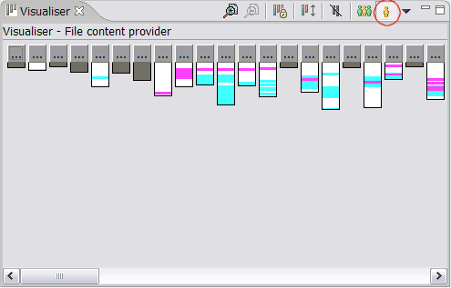
Group View:
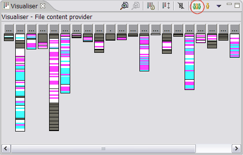
Providers can choose to give Member and Group view different names and different
icons. For example, AJDT describes Member View as "Class View" and Group View as "Package View" and
gives them class and package icons accordingly. Whichever provider you are using, the farthest right
button will be the Member View button, and the button just left of that will be the Group View
button.
Drawing Options
As well as Member and Group views, the Visualiser provides a variety of means
of manipulating the bar drawing it produces.
Deselecting kinds
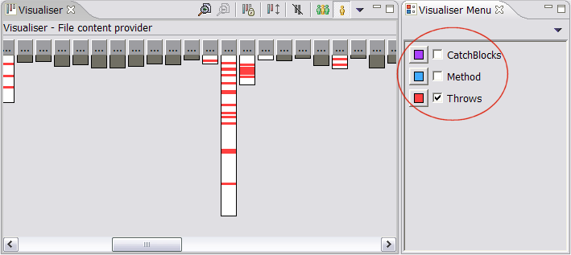
Changing the colours of kinds. (Click one of the buttons with a coloured square
on to bring up a colour selection dialog for that kind).

Limit to affected bars only
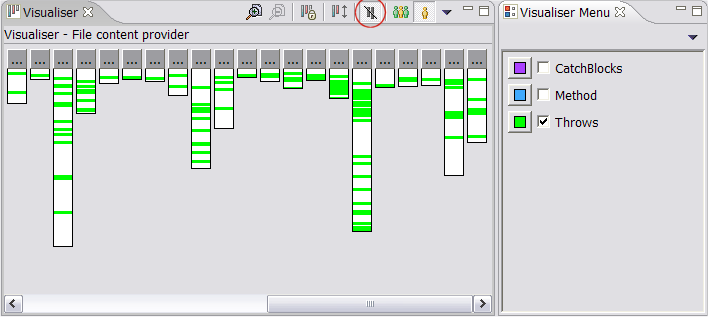
Zoom in
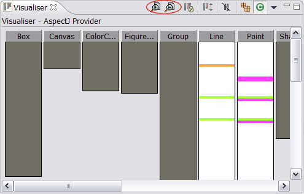
Show or hide demarcations between members in Group View (Use the preference page to set)
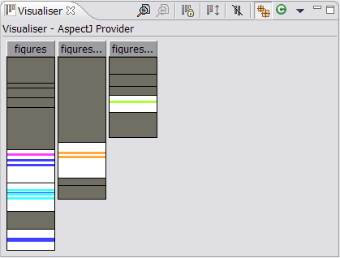

Change the minimum bar width (Use the preference page to set)
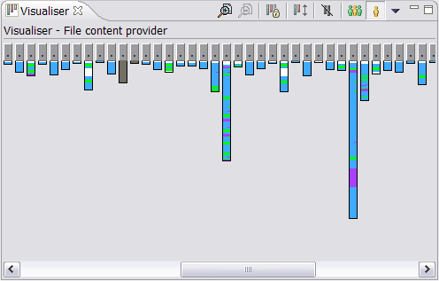
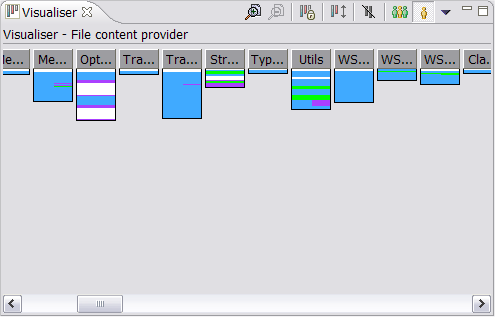
Change the maximum bar width (Use the preference page to set)
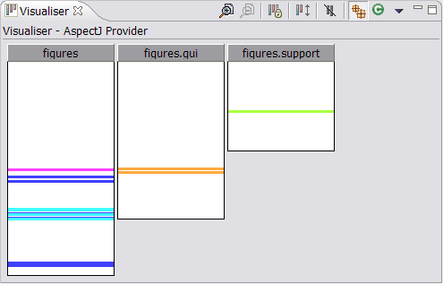
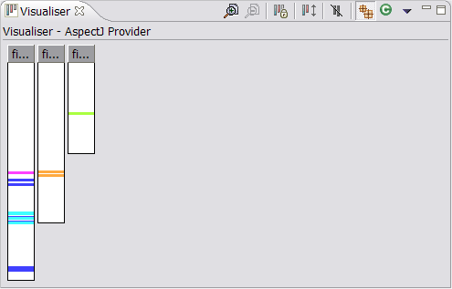
Change the minimum stripe depth (Use the preference page to set)
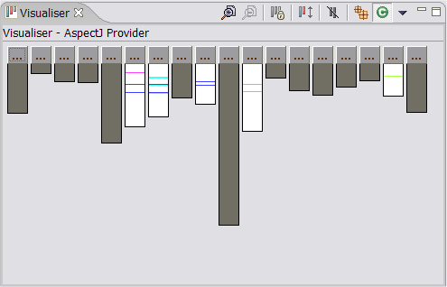
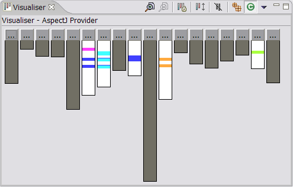
View the image in absolute proportions, such that each blank line and
stripe is the same depth, which is at least the minimum stripe depth


Quick-Select Actions
Several actions have been provided to enable quick selection and de-selection of kinds being shown.
This is particularly useful for large data sets.
Select All / Select None
Selects (or deselects) all of the kinds in the Visualiser Menu.
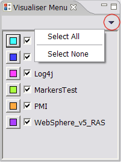
Only show..
Right click on a bar, then click "Only show colors affecting this bar". This will activate
all the kinds in the menu that affect the selected bar, and de-activate all the others.
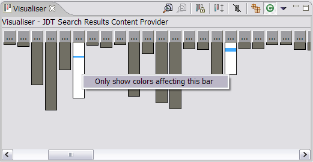
Providers
The Visualiser has a plug-in architecture where 'providers' register using the extension point
provided. The Visualiser preferences page allows users to switch between providers.
To open the preference page click "Window" > "Preferences", then select "Visualiser"
from the left hand menu. Alternatively click "Preferences" from the drop-down menu in the
Visualiser view.
The Visualiser comes with three built-in providers:
- a simple file provider which reads bar and stripe infromation from two files
- a JDT provider which responds to selections in the package explorer and displays
Java classes as bars
- a JDT search results provider which displays Java classes as bars and the results
of the most recent Java search as stripes.
To find out about writing your own provider for the Visualiser, see the
"Writing a plug-in for the Visualiser" section
of the Visualiser help.